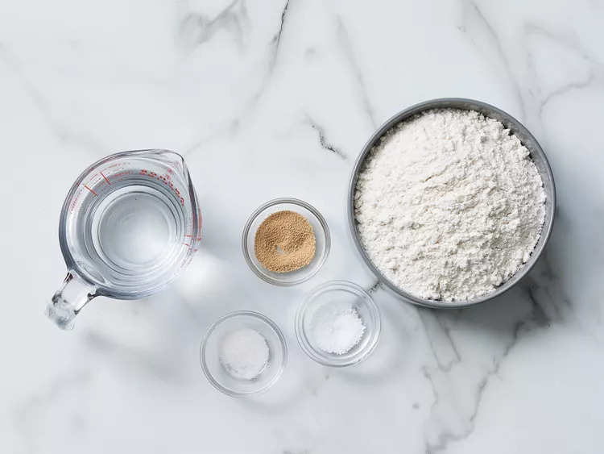
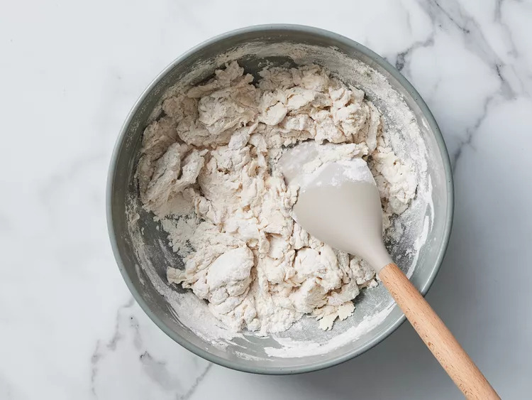
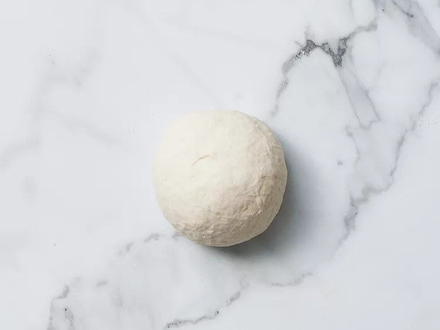
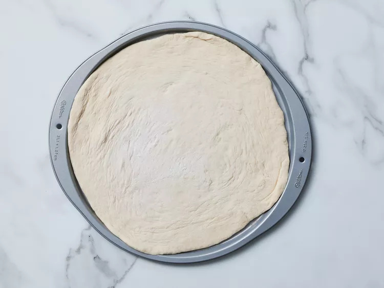

Thin crust pizza dough recipe
Description
It's easy to make this thin crust pizza dough recipe with a
few ingredients you may likely already have on hand.
Ingredients
- 1 teaspoon active dry yeast
- 1/4 teaspoon white sugar
- 3/4 cup lukewarm water
- 2 cups all-purpose flour, divided
- 1/2 teaspoon salt
steps
-
Gather all ingredients.

-
Dissolve yeast and sugar in warm water that's 44 degrees C in a small bowl.
Let stand until yeast softens and begins to form a creamy foam, about 5 to 8 minutes
-
Combine 1 3/4 cups flour and salt in a large bowl.
Pour in yeast mixture; mix well until dough comes together

-
Transfer dough to a floured surface and knead until smooth,
about 2 minutes. Add remaining 1/4 cup flour if dough is too sticky.

-
Roll dough into a 12-inch circle. Transfer to a greased pizza pan.

-
Add your favorite toppings and bake. Enjoy!